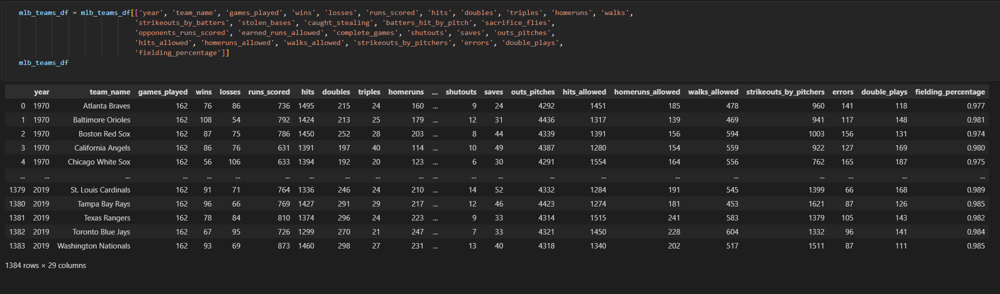
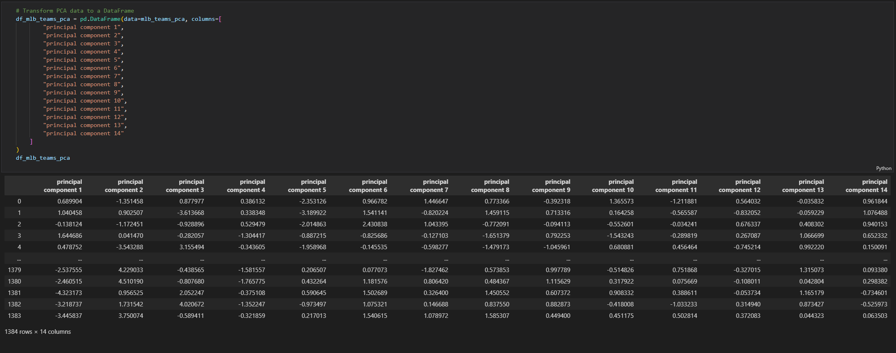
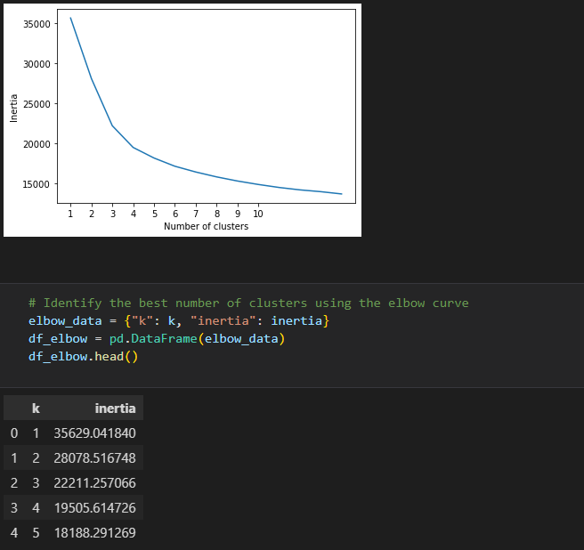
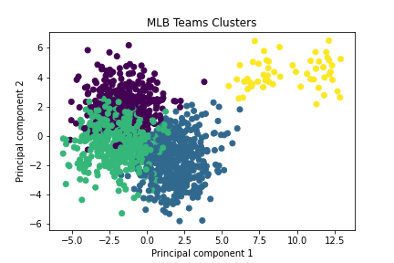

The goal of this analysis was to find similar groupings of teams and their performances over the years.
By grouping teams with together, we can analyze similar statistics of the groups and hopefully see which stats lead to better results.
The first step we did was to prepare the data from the CSV file obtained from
dataset.
We created a Pandas DataFrame and cleaned up the data.
Certain statistics were not recorded in the dataset prior to the year 1970 so we decided to use the statistics from the years 1970-2019.
We chose to omit 2020 because of a shorted season due to COVID-19.

After cleaning the data, we scaled the data so statistics with larger values would not influence the results more than statistics with smaller values.
Then we applied dimensionality reduction with Principal Component Analysis. This brought our table down to 14 main components.

The next step was to further reduce the dataset dimensions with t-distributed stochastic neighbor embedding (t-SNE).
This allowed us to visualize the dataset with 14 dimensions (the principal components) on a two-dimensional plot.

Then we took the data and ran it through a cluster analysis with K-means to partition the data into clusters.
We used the elbow curve to identify the best number of clusters which we found to be 4 clusters.
Then we were able to append that data back onto the original DataFrame to better interpret the results.

The clusters are a good visualization of performance and each team's season performance belongs to one of the four cluster groups.
The smallest group which only accounted for 4% of the data were the years 1981 and 1994 because they were also shorted seasons due to strikes.
We can also see that teams in group 0 which accounted for 30% of the data had the most wins over the course of that particular season. Correlated
statistics were saves, strikeouts, and of course runs scored toping the other cluster groups. Interestingly teams in class 1 had the most errors as
well as the fewest runs scored during their season, but this did not translate into the lowest number of wins. Teams in class 2 actually had the
lowest number of wins likely because they also had the most runs scored against them over the course of the season.